本文介绍12种的设计模式，包括策略模式、装饰器模式、适配器模式、外观模式、模板模式、代理模式; 观察者模式、命令模式; 工厂模式、组合模式；状态模式、迭代器模式。
本文是学习《Head First设计模式》整理的博客。
概述
OO基础
- 封装
- 继承
- 多态
OO原则
封装变化
找出应用中可能需要变化之处，把它们独立出来，不要和那不需要变化的代码混在一起针对接口编程，不针对实现编程
多用组合，少用继承
继承是一种Is-A行为，而组合是一种Has-A行为
is-A比Has-A有更强的关系
has-A可以通过has接口，来实现has具体内容的多态，比is有更好的灵活性类应该对扩展开发，对修改关闭
允许类容易扩展，在不修改现有代码的情况下，就可搭配新的行为
遵循开发-关闭原则，通常会引入新的抽象层次，增加代码复杂度。需要把注意力集中在设计中，最有可能改变的地方，然后应用，而不是每个部分都这样设计。
UML规定
继承： 实线空箭头
实现： 虚线空箭头
组合： 实线实箭头
策略模式
示例
鸭子的故事：
绿头鸭：会飞行， 叫起来呱呱叫
红头鸭：会飞行, 叫起来吱吱叫
普通鸭：不会飞行，叫起来呱呱叫
橡皮鸭：不会飞行，叫起来唧唧叫
…
首先看到了鸭子，以及不同种类的鸭子
其次是看到了鸭子的2种行为，飞行与叫;
具体的飞行与叫声并不一一对应，不同的鸭子可能有相同的飞行行为与叫的行为
类图
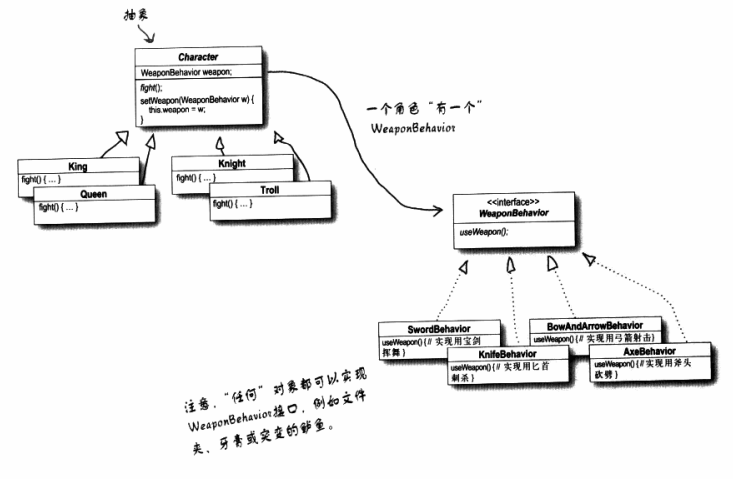
分析
策略模式本质本质上是对动作、函数、算法等变化时的一种封装，将算法封装成算法族，一方面使之可以相互替换，另一方面增加了复用。
这里看到了一种n-m的情况，将n抽象,将m也抽象，然后前者组合后者。
也可降维使用，只有1-m的情况
装饰器模式
示例
类图
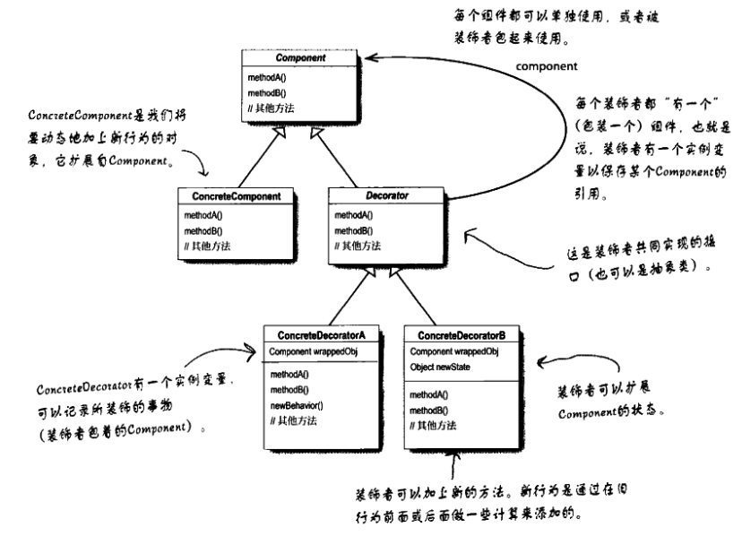
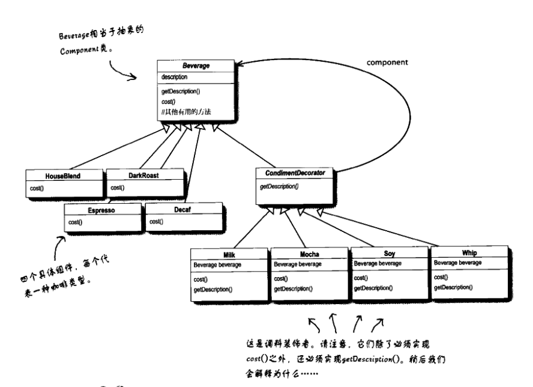
分析
装饰器(Decorator)在使用上有2个抽象维度，1个分类维度看作主维度（横向维度），另一个是次维度（纵向维度），在第二个维度上的各个量，是修饰第一个维度上的各个量，并且第二个维度上的各个量之间，没有先后次序，且可以累加使用。第二个维度上也应该是多个量，如果是单个量，也没必要如此使用
装饰器(Decorator)与代理有一些相似之处：
相同之处：
首先对于装饰类与代理类都从一个父类来继承，拥有相同的接口，
而且都持有被装饰类与被代理类的引用。在调用接口时分不清代理与被代理或者装饰器与被装饰器。不同之处：
装饰器模式，装饰类与被装饰类都有多个，是多对多的关系，而代理被代理一般是一对一的使用。
装饰器可以累加的使用，且没有先后关系的限制； 代理是在一个代理类中完成访问控制，至于控制的先后顺序，应该有关。
应用：
感觉在预处理模块中，也可以使用，但需要写死被装饰的顺序，这点有些耦合过高。
适配器模式
示例
适配器模式示例现实生活中有很多，比如前几天买的手机USB接口与PC的USB接口的转换器;或者head first中的不同插座之间的适配器。
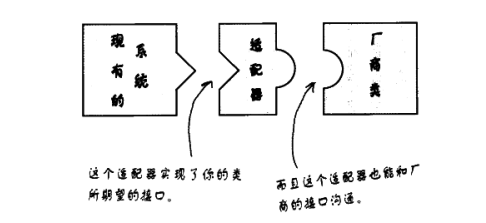
类图
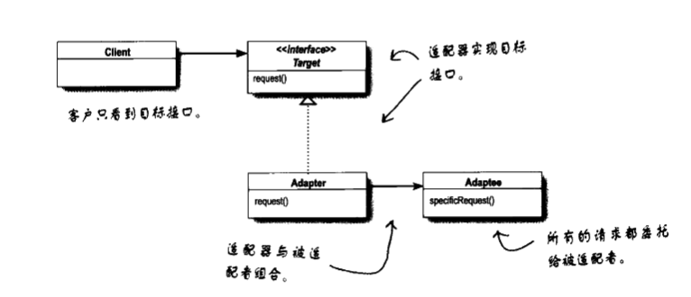
分析
适配器模式将一个类的接口，转换成客户期望的另一接口。让原本不兼容的类可以兼容。
适配器就涉及3个对象，被适配者、适配器、使用方，正对应于图1的三个部分。
系统出了新的接口，并面先行的接口编程，但为了兼容老的接口，便生成adapter，来转换老的接口。
外观模式
示例
外观模式head first给出的实例是家庭影院，买了很多的设备，为了设置家庭影院，需要调灯光、调音箱，调投影仪，爆米花，关闭的时候还需要进行相反的关闭操作。
类图
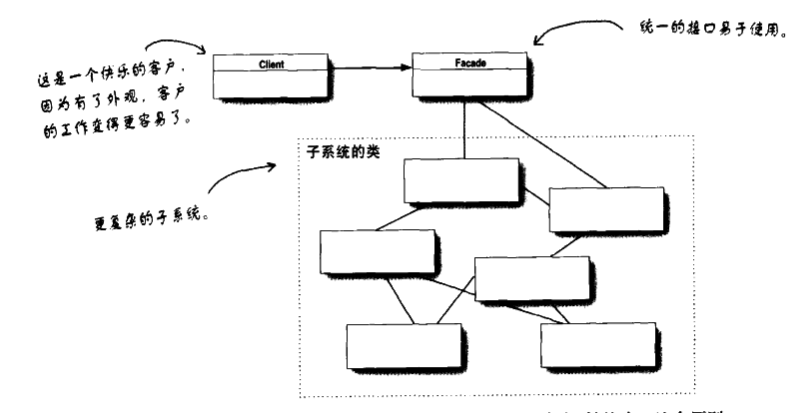
分析
外观模式就是增加一个外观类，来完成对这些对象的调用配置，其实就是一个封装。
提出了与适配器模式不同的对比：
适配器模式中，只做接口的转换，而外观模式是封装对多个对象的调用，为客户提供统一的接口而已。
还提出一个原则：
最少知识原则：即，只和你的密友交谈。对于用户，涉及的对象越少越好。
模板模式
示例
head first给出了例子是煮咖啡与沏茶的例子：他俩的的过程相同，需要烧水，冲泡，倒到杯子里，加调料。他们的不同之处是冲泡的内容不同，添加的提案不同。
这样就设计了一个抽象类，用于将算法的逻辑写好，然后实现烧水、倒到杯子，将冲泡与加调料设置为抽象方法，而咖啡与茶只要去实现冲泡与加调料，就可以完成整个过程。
类图
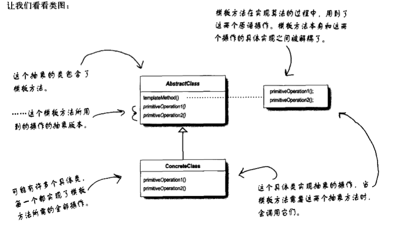
模板模式在一个方法中定义一个算法的骨架，而将一些步骤延迟到子类中。模板方法使得子类可以在不改变算法结构的情况下，重新定义算法中的步骤。
分析
从类图上看，模板模式很简单，就是一个继承结构，它的思想却挺有趣，首先一个算法是分几个步骤（函数）来实现的，在父类中将这个步骤的调用过程固定下来，并将需要子类实现的步骤定义为abstract类型，子类只需实现这些接口，就可以完成真个算法。
这样存在一个问题，即所有的步骤调用太固定，若有差异不够灵活，后来有了一些变易，它可以提前准备一些hook函数，子类通过实现不同的hook，来使整个算法的逻辑发生一点改变。
在应用上，像是sort函数需要传入compareaTo，就是这种思想的一种体现。
原则
好莱坞原则：高层对待低层组建的方式，别调用我们，我们调用你。
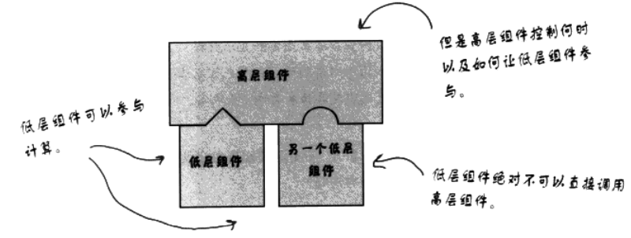
我们在抽象工厂模式中，见过这种高层与低层组建关系的原则：依赖颠倒原则，即分离高层与低层的组件，让他们都以来接口。那时候的高层是工厂类，而低层是产品类接口。
代理模式
示例
代理模式中，head first给出了3种：远程代理、虚拟代理、保护代理
远程代理： 远程代理指的是用一个电脑上的类、代理另外一台电脑上的一个类。例子是想统计想统计在经历的机器上来显示其他电脑上各糖果机器的情况。
虚拟代理： 就是缓存代理，对于大的对象，在对象时候的时候再去创建它。例子是从网络加载图像，通过虚拟代理，创建一个新的线程来加载图像，在没有加载完成一直使用虚拟带来应答，加载完成后，将请求再交给真实对象。
保护代理： 也就是动态代理，这里是把Java的动态代理讲的最明白的。动态代理意思是在运行时，才生成的代理对象。
类图
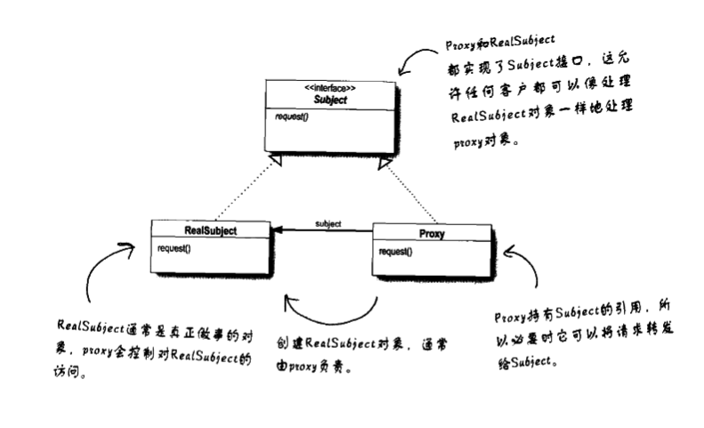
代理模式为另一个对象提供一个替身或者占位符以控制对这个对象的访问。使用代理模式创建代表对象，让代表对象控制某对象的访问，被代理的对象可以是远程的对象、创建开销大的对象或需要安全控制的对象。
分析
远程代理
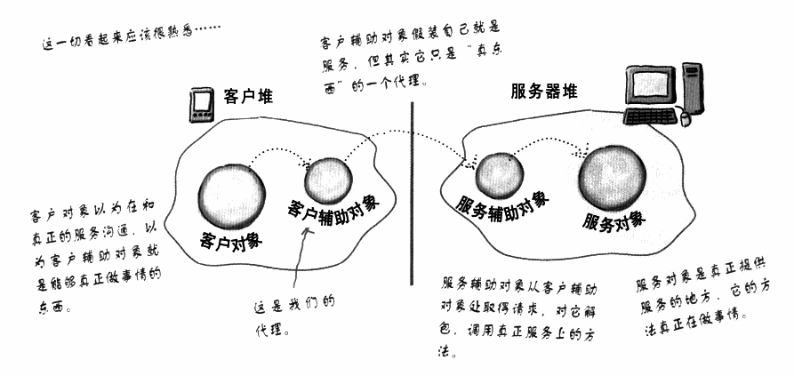
Java提供远程代理的实现，由Java的命令（工具）自动实现客户辅助对象与服务辅助对象的创建，也就封装了代理对象（客户对象）与被代理对象（服务对象）之间的通讯。但还需要程序员去实现代理对象与被代理对象。
Java用的比较少一些，对于远程代理没用用过，而且现在的使用场合也不太确定，如果是BS或者CS之间的通信，用http、tcp/ip就可以完成通信；如果是S与S之间的通信，可以通过数据库+数据总线的方式来实现。动态代理
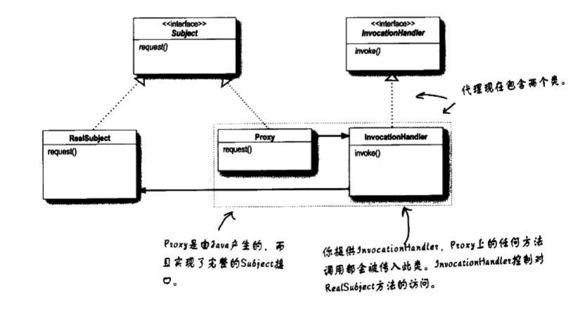
这里是我觉得对Java的动态代理讲的最清楚的地方。它将代理包含在两个类中：Proxy以及InvocationHandler中，其中Proxy提供访问被代理类的接口，InvocationHandler真正访问被代理类，控制对被代理类的访问。
在使用上，先创建InvocationHandler类，并传入被代理的对象，在实现的Invoke接口中进行控制，通过控制的调用被代理对象的方法，在使用是，通过new Proxy对象（Proxy的创建会传入被代理类的接口，即他俩接口相同），并将InvocationHandler类来传入来实现真正的控制访问。
观察者模式
示例
类图
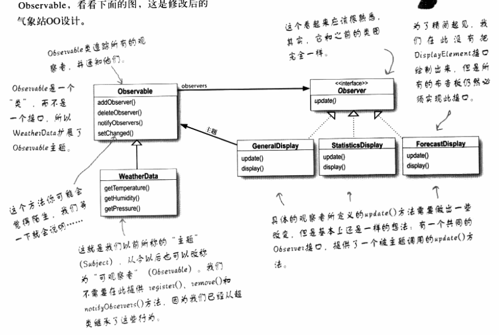
分析
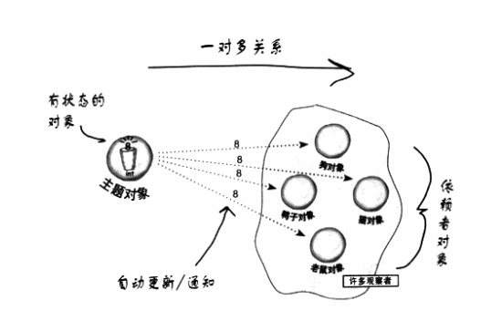
观察者模式是一方对多方单方发送数据的模型。
首先它是一方对多方，其中一的一方是Subject(或者Observable)，多的一方是Observer.
Subject中有一个Observer的列表， 当数据发生变化时，调用Observer的接口函数，将数据发送给列表中的各个Observer其次它是单方发送据的，Observer只负责接收数据。
这里隐含一个变化，如果一个Observer要把数据发送给其他的Observer，是可以再调用Suject的set数据的函数，来完成数据分发的。应用：
一个是flux中的pub与sub
另一个是android里的与后端通信，获取数据，然后使用数据的情况。
命令模式
示例
Head First给出的示例是多功能遥控器
遥控器有一个插槽，可以插不同的遥控器，比如电视的、电灯的、风扇的等，最多有7种。
对于这些遥控器，预留出7对按钮，分别控制on与off
类图
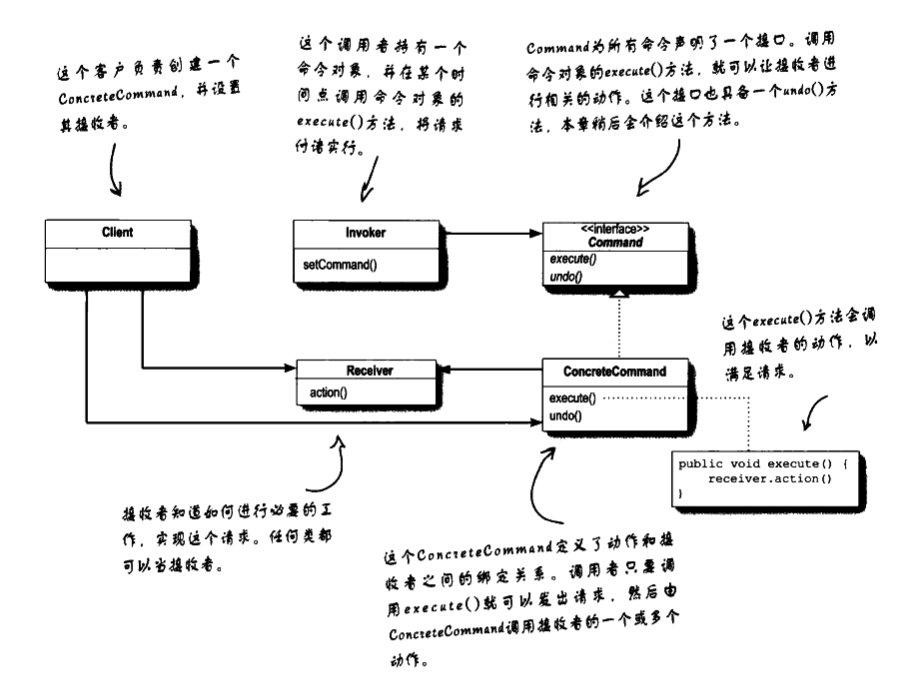
分析
解析
命令模式中，由4种角色组成，命令执行者（命令接收者 receiver）、命令(commond)、命令的创建者、命令调用者(invoker)
命令本身封装了命令执行者，以及较固定的函数（exec()、undo()等）
命令的创建者创建命令以及执行者，并将执行者set进命令的地方。创建者是一个隐含的地方，可以是一个函数，并一定是类。
命令调用者负责调用命令的执行（exec）函数。命令模式真正是通过对命令与命令执行者的封装，完成了命令创建者与命令调用者的解耦， 其实也完成了调用者与执行者的解耦。
在命令模式的例子中，执行者是电视、电灯，创建者是在main函数中，调用者是遥控器这样，命令的调用者既可以用单个命令变量来存放命令，也可以用一个数组来存放多个命令，然后在执行时，便利去执行。在这种情况下涉及到一个问题，如果一个问题的处理需要一连串的命令，按顺序执行来完成，后一个命令的执行依赖于前一个命令执行的数据，这种情况下，是否适合使用命令模式？
应用
队列请求：
创建者将命令创建后，放如一个队列中，执行者在多个线程中快速并行调用这行命令。重做日志：
命令模式还用于数据库的重做日志，将命令实现序列化的方法，store/load等接口进行持久化，然后在发生故障时，load命令进行执行，即可。对比
其实有些像观察者模式，与观察者模式最大的不同在于，观察者模式中发布与订阅是一个一对多的关系，而在命令中，命令的创建者与调用者是一对一的关系。
另一个不同是，观察者模式中发送的只是一个小对象，比如一个字符串，或者一个bean。而在命令模式中，确是封装了执行者的命令。
工厂模式
示例
批萨店做批萨;
不同地区的批萨店，对于同款产品，区域特点不一样;
同一批萨店，对于同款产品，有不同风味的做饭，采用的原料有一些差异
类图
工厂模式
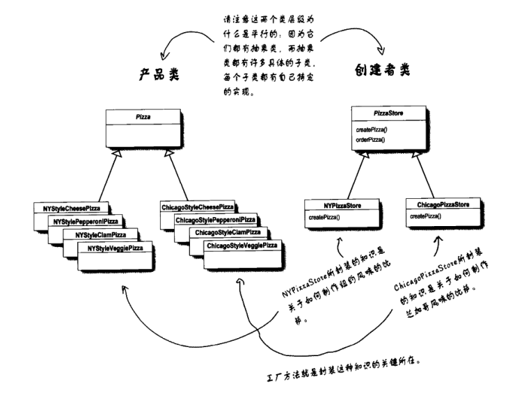
工厂模式：定义一个创建对象的接口，但由子类决定要实例化的类是哪一个，把类的实例化推迟到子类。抽象工厂模式
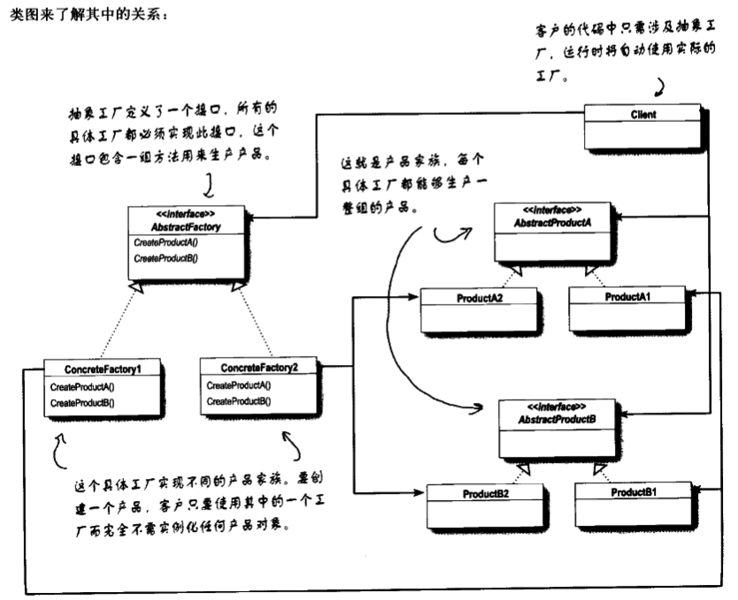
抽象工厂模式： 提用一个接口，用于创建相关或者以来对象的家族，而不需要指定具体类分析
以前看的应该是抽象工厂模式，工厂模式较之类图结构更简单一些
工厂模式是抽象出了2个层级： 第一是创建者或者工厂，第二是产品类，由工厂来创建产品。产品类全部都继承自产品类本身，这样其实是把隐含的系列给隐掉了。
抽象工厂也是有2个层级：创建者与产品。 创建者的层级与工厂模式类似，不同的是产品层级，产品层级细分，细分基本是依据创建者来分开的（具体情况下，不同工厂也会用相同的产品）。 其实在各个原料上，如Dough、Sauce、Cheese它们可以抽象成Ingredient（原料）类。这样以来，就会看出跟工厂模式更多的相似之处。创建者与产品之间的关系也必须是具体的，或者写死的。
另外一个不同可以看到，它将工厂变成的接口，是一个大的接口，必须包含所有的创建者的行为，即使在某个工厂中不需要这种行为，也得实现。
原则
依赖倒置原则：要依赖抽象，不要以来具体类。不能让高层组件依赖具体的低层组件，高层与低层组件，两者都应该依赖于抽象。
变量不可以持有具体类的引用。
使用new事，就会持有具体的引用，可以使用工厂来避开这种做法不要让类派生自具体的类。
如果派生自具体类，就会以来具体类，应该派生自一个接口尽量不要覆盖基类中已实现的方法
基类中已实现的方法，应该由所有的子类共有。
PS： 应该在有封装变化的时候，尽量靠近这些原则，而不是随时都要使用这些原则
如一个不会改变的类，就可以在代码中直接实例化。
组合模式
示例
组合模式的实例也是与菜单相关，除了上边提到的3餐的菜单，餐厅想提供一份单独的甜点菜单，比如加到晚餐里。
这样菜单的结构发生了改变，它使得咖啡厅的晚餐菜单包括一个子菜单
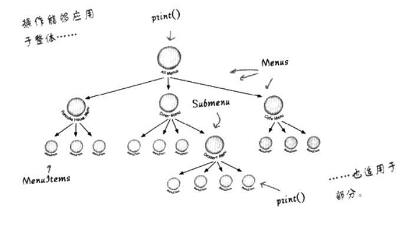
类图
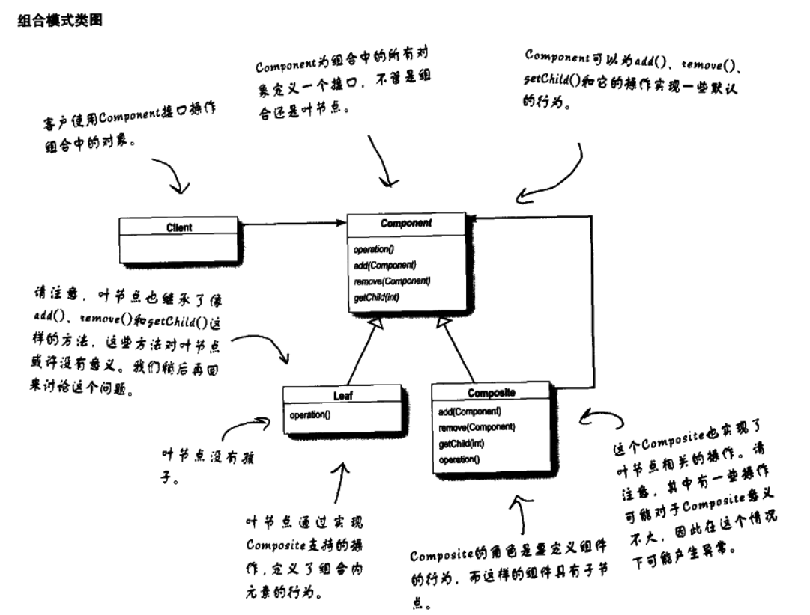
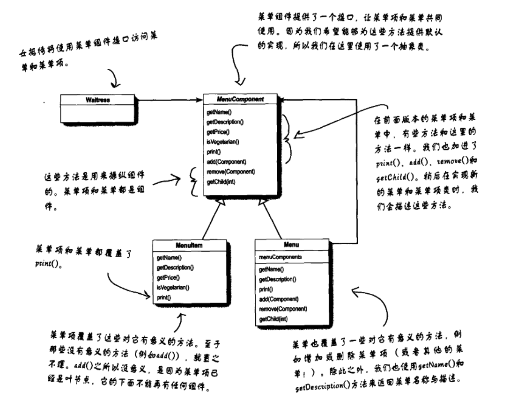
组合模式允许你将对象组合成树形结构来表现“整体/部分”层次结构。组合能让客户以一致的方式处理个别对象以及对象组合。
分析
组合模式可以认为是将树在类中去实现。使用者对是组合还是单个对象而透明。
状态模式
示例
糖果售货机，投入硬币，摇动把手，出货;
若没有货，也会提示没货，然后退出硬币;
投入硬币后也可以直接退回硬币
这样有这样几种状态：无货， 未投币， 已投币， 出货
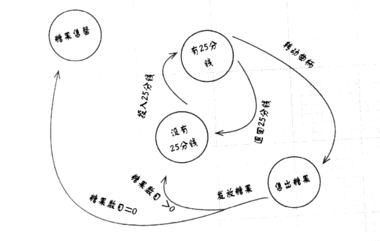
类图
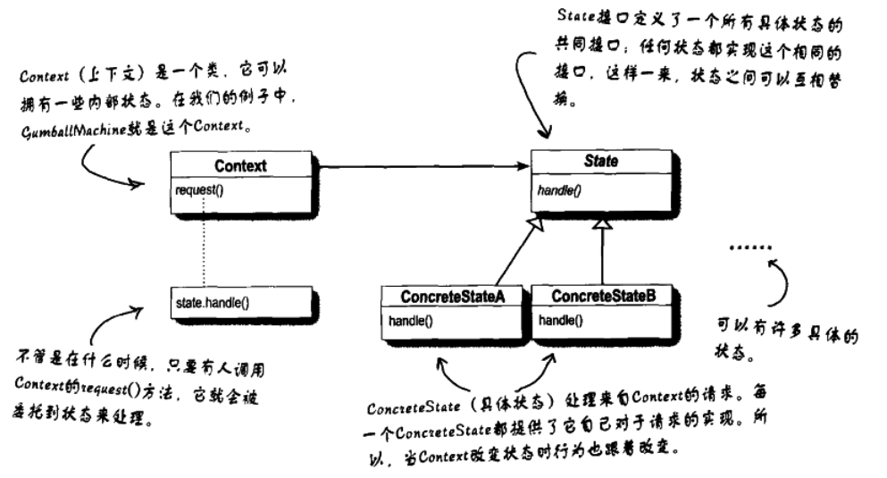
状态模式允许对象在内部状态发生改变时，改变它的行为，对象看起来好像修改了它的类。
分析
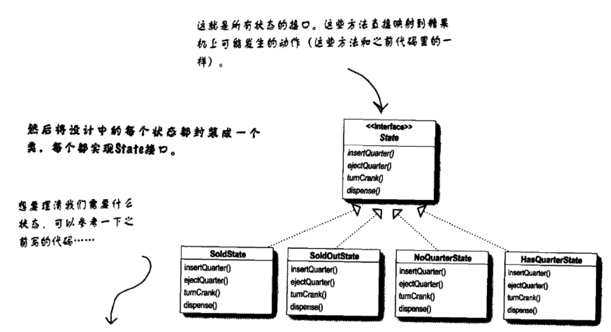
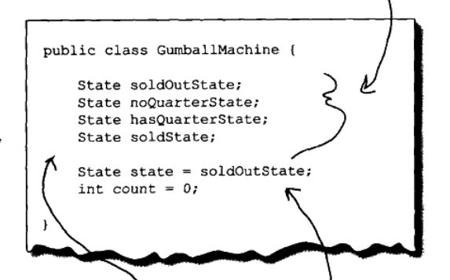
在实现上，Context类中有所有的状态类（这里有4个），还有一个当前状态变量。State接口包括着所有可以执行的操作（引起状态变化的动作），具体状态实现所有的接口，然后在自己状态对应的操作里实现功能代码，并在这个操作里调用Context的设置状态函数，设置下一个状态。
这样状态转换的逻辑是放在状态中去掌握的，其实可以放在Context中去把握，我感觉更好一些。因为如果有别的Contex时，可以复用这些状态，而他们的状态转换逻辑可以放在自己的代码中。
迭代器模式
示例
不同餐厅的菜单用不同的数据结构来实现的，早点摊位用的是数组，午餐食堂用的是List，晚餐咖啡厅用的是HashMap。
现在有一个服务员，需要根据这些不同的菜单提供服务，非迭代器方式下，服务员需要对这些不同的菜单定义不同的遍历方法。而迭代器模式会使用使遍历使用相同的接口。
类图
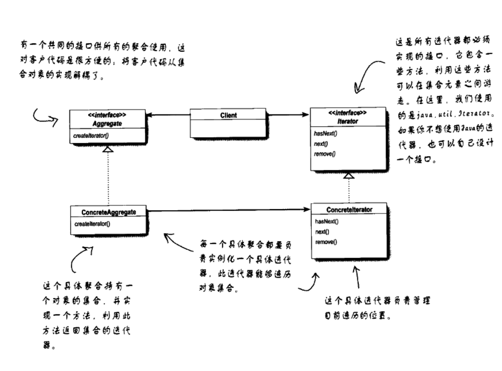
迭代器模式提供一种方法，能够顺序访问一个聚合对象中的各个元素，而又不暴露其内部的表示。
分析
从类图上看，迭代器模式有些像工厂模式，毕竟每一个具体的Aggregate对象都对应唯一的Iterator对象。为不同的数据结构提供了统一的遍历接口。
单一职责原则
一个类应该只有一个引起变化的原因。
类的每个职责都有改变的潜在区域。超过一个责任，意味着超过一个改变的区域。
内聚：当一个模块或者类被设计成只支持一组相关的功能时，我们说它具有高内聚，单一职责的原则的类，很容易就有高内聚，比低内聚的更容易维护。
可看作成封装的粒度建议。